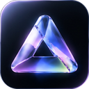

Всё, что сохраняете, сразу попадает в Oddments на этом компьютере. Приложение должно быть открыто.
Записывает выбранный кусок страницы как видео: анимацию, интерфейс, прокрутку.
В Chrome и Edge видео записывается в MP4 со звуком вкладки, максимум 5 минут. Рамка и кнопки в запись не попадают. Если Oddments закрыт, файл уходит в загрузки браузера.
Переносит в Oddments доску, кластер или канал со всеми картинками и видео в исходном качестве.
В Oddments появится подборка сервиса, например «Pinterest», в ней подборка доски, а разделы доски станут вложенными подборками. Описание пина попадает в поиск. Если забрать ту же доску ещё раз, добавится только новое. Удалённое в Oddments обратно не вернётся. Закрытые каналы Are.na забираются с личным токеном: его можно вставить в окне расширения, в настройках › Are.na. Текстовые блоки Are.na не переносятся.
Браузер даёт расширению только четыре клавиши сразу. Остальным действиям клавишу можно назначить самому кнопкой выше.